În stînga este slide-ul din curs, în dreapta aceeași figură sau același tabel, calculat în browser din aceleași date. Butonul ▶ modifică parametrul pas cu pas; casetele „Exemplu rezolvat” refac rezolvările problemelor de examen cu cifrele capitolului.
Procedura Box–Jenkins completă: inflația din România · Examenul
Procedura Box–Jenkins completă: inflația din România
Pasul 1: datele
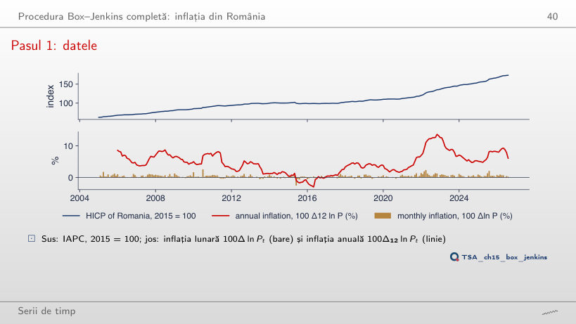
Răspuns
Scade de la 0,52% (2005–2010) la 0,31% (pînă în august 2020), apoi urcă la 0,39% pe tot eșantionul: valul de inflație din 2021–2023 și șocul fiscal din 2025 ridică media. Minimul inflației anuale, −3,0% în mai 2016, cuprinde în fereastra de 12 luni reducerea TVA la alimente din iunie 2015; maximul, 13,6%, este în noiembrie 2022.
Interpretarea datelor
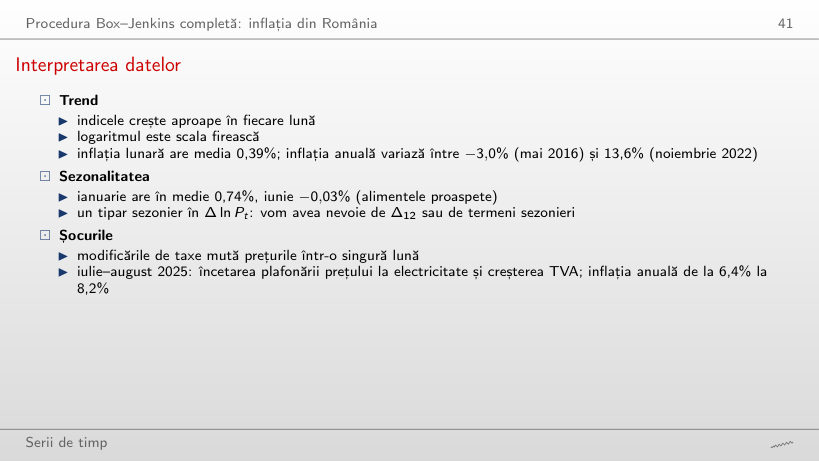
Răspuns
Nu: din 2020 iunie are în medie +0,28%, iar ianuarie rămîne luna cea mai mare (0,94%). Tiparul sezonier (ianuarie sus, iunie jos) se păstrează, dar nivelul crește odată cu inflația generală din 2021–2023; de aceea modelul lucrează cu Δ12, care elimină și nivelul, și sezonalitatea fixă.
Pasul 2: teste de rădăcină unitară și de staționaritate
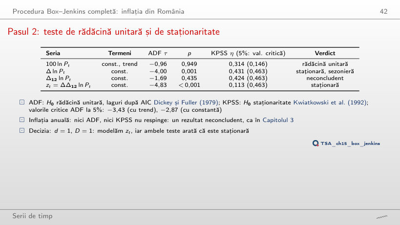
Răspuns
Rădăcină unitară: ADF nu respinge (p între 0,66 și 0,97), iar KPSS respinge (η între 0,59 și 1,48, peste 0,463). Rezultatul neconcludent din curs apare numai după 2022, cînd valul inflației adaugă variație. În aceiași ani Δ ln P primește „contradictoriu”: ambele teste resping, pentru că sezonalitatea și schimbările de nivel ale inflației lunare încalcă ipotezele ambelor teste.
Pasul 3: identificarea din corelograma lui zₜ
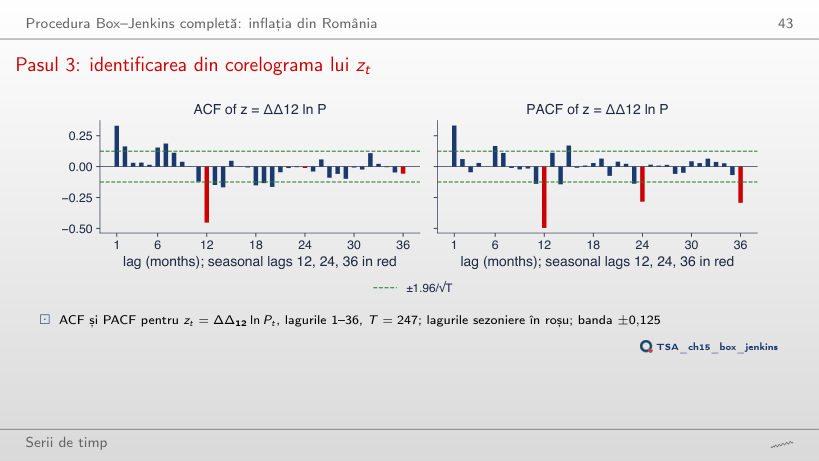
Răspuns
0,25, 0,22 și 0,18, toate peste banda ±0,12 și descrescînd încet: tiparul sezonier nu a fost eliminat, deci este nevoie de Δ12. Pentru Δ12 ln P ACF începe la 0,98 și scade foarte încet (o rădăcină aproape unitară); abia z = ΔΔ12 ln P are o singură valoare sezonieră mare, −0,45 la lagul 12.
Interpretarea corelogramei
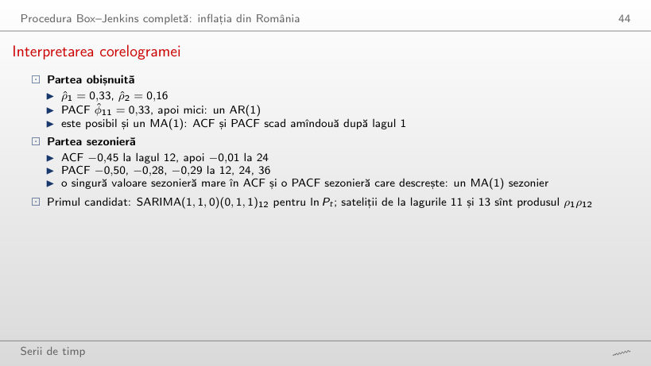
Răspuns
−0,49 = Θ/(1 + Θ2) = −0,867/1,752. Un MA(1) sezonier are o singură autocorelație sezonieră nenulă, la lagul 12, iar mărimea ei nu poate depăși 0,5 în modul; cu φ = 0 sateliții de la 11 și 13 dispar. Cu φ = 0,416 ei sînt aproximativ φ · ρ12, iar în eșantion ρ̂11 = −0,12 și ρ̂13 = −0,15, aproape de produsul ρ̂1ρ̂12 = −0,15.
Pasul 4: estimarea candidaților
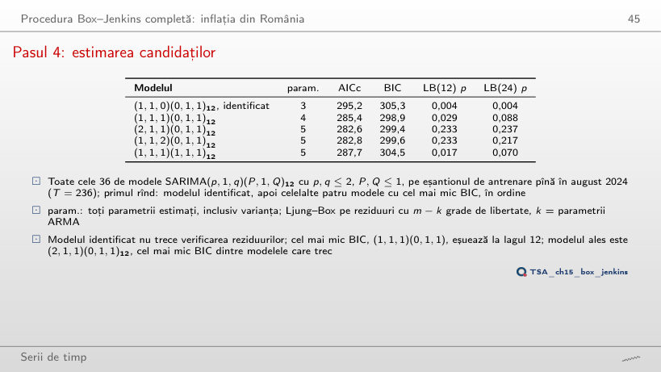
Răspuns
(2,1,1)(0,1,1)12, chiar modelul ales. Cu c = ln 223 = 5,41 (BIC) cîștigă (1,1,1)(0,1,1)12, care are un parametru mai puțin, dar pică testul Ljung–Box la lagul 12 (p = 0,029); de la c ≈ 5 în sus el rămîne primul. Modelul ales nu se schimbă pentru niciun c din grafic, pentru că este cel mai bun dintre modelele care trec verificarea.
Pasul 4: modelul ales
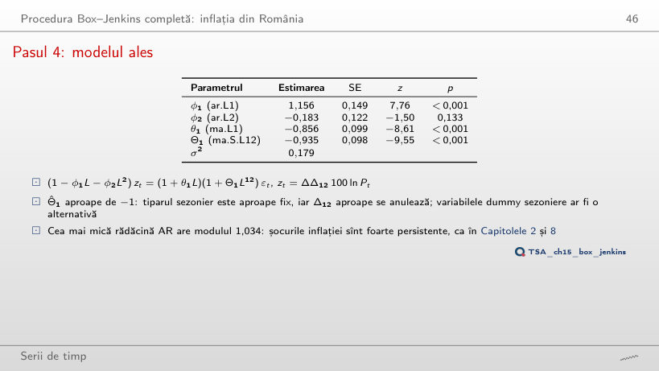
Răspuns
(2,1,1)(0,1,1)12, cu modulul 1,034 (inversul 0,967), urmat de (1,1,2)(0,1,1)12 cu 1,035. Modelul identificat are o singură rădăcină AR, 2,40: un AR(1) cu φ = 0,42 nu poate reproduce persistența inflației. Rădăcinile MA sezoniere au toate modulul aproape 1 (1,006): Θ1 ≈ −1 aproape anulează Δ12.
Pasul 5: verificarea reziduurilor
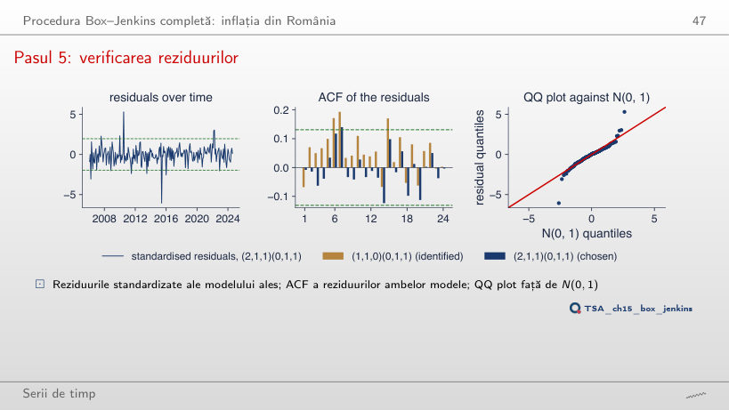
Răspuns
La niciunul: kurtosis-ul rămîne între 9,5 și 10,0, iar Jarque–Bera între 390 și 454. Termenii AR și MA în plus elimină autocorelația, nu valorile extreme: reziduurile din iunie 2015 (−6,1σ) și iulie 2010 (5,3σ) vin din modificările TVA, pe care niciun model univariat nu le poate anticipa.
Interpretarea verificării reziduurilor
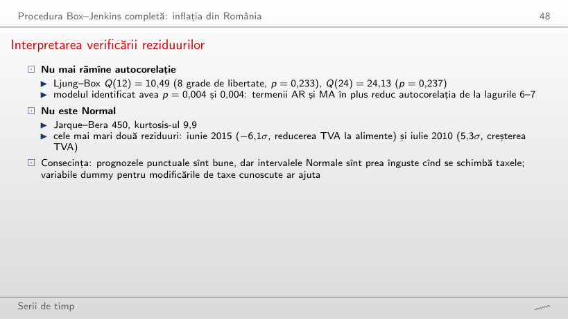
Răspuns
Nu: la m = 7 p = 0,025 și la m = 8 p = 0,048; la toate celelalte laguri, inclusiv 12 și 24 (cele din curs), p > 0,05. Modelul identificat pică la fiecare m între 6 și 36. Un test la mai multe laguri nu este independent: alegerea lui m schimbă verdictul la limită, de aceea cursul raportează două laguri fixate dinainte.
Pasul 6: prognoze
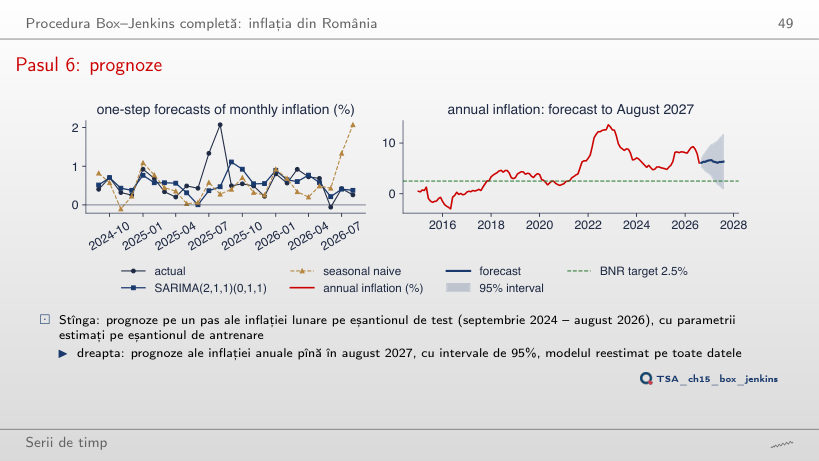
Răspuns
9,7%, cu intervalul de 95% [3,9; 15,5], care conține valoarea realizată. Modelul tratează o parte din salturile din iulie–august 2025 ca persistente (rădăcina AR 0,967) și nu știe că acestea au fost decizii fiscale unice; la originile următoare prognoza pe 12 luni coboară, cu oscilații, pînă la 6,3% din august 2026.
Interpretarea prognozelor
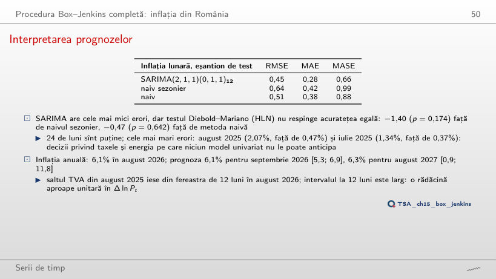
Răspuns
Nu: cel mai mic p este 0,174, chiar la 24 de luni. Cu 11 luni statistica devine chiar pozitivă (0,10), pentru că erorile mari din iulie–august 2025 cad pe SARIMA. RMSE mai mic nu înseamnă o diferență semnificativă: pe un eșantion scurt varianța lui dt este mare.
Examenul
Problema 1: rezolvare
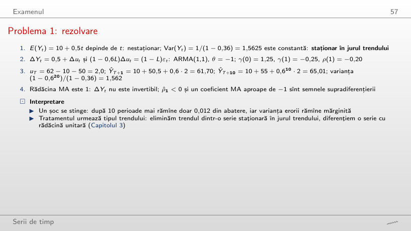
Exemplu rezolvat
Răspuns
−0,025 = −(1 − φ)/2. Diferențierea unei serii staționare în jurul trendului dă un ARMA(1,1) cu θ = −1; pentru φ aproape de 1 rădăcina AR și rădăcina MA aproape se anulează și ACF a lui ΔY pare zgomot alb, deși ΔY rămîne neinvertibil. Cu φ = 0 corelația este −0,5, valoarea unui MA(1) cu θ = −1.
Problema 2: rezolvare
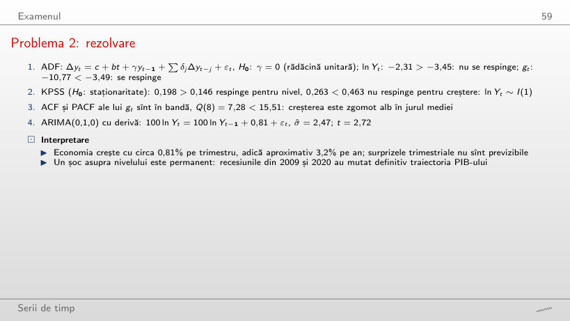
Exemplu rezolvat
Răspuns
Da: Q(8) = 4,18, p = 0,841, iar deriva este 1,00% pe trimestru (σ̂ = 2,49). Pe tot eșantionul, cu 2020 inclus, Q(8) = 7,28 (p = 0,506) și deriva 0,81%: căderea din 2020Q2 scade media, dar nu creează autocorelație. ADF pentru nivel rămîne nerespins (−2,08 în 2019Q4).
Problema 3: rezolvare
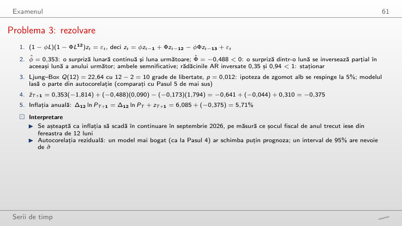
Exemplu rezolvat
Răspuns
Prognoza este z = 0,753 și inflația anuală 8,93%; s-a realizat z = 0,090 și 8,26%. Termenul φzT duce saltul din august în septembrie, deși saltul a fost o decizie unică. Cu originea în iulie 2026 prognoza pentru august 2026 este 6,83%, față de 6,09% realizat: ieșirea saltului din fereastra de 12 luni este subestimată, pentru că |Φ̂| = 0,49 < 1.
Problema 4: rezolvare
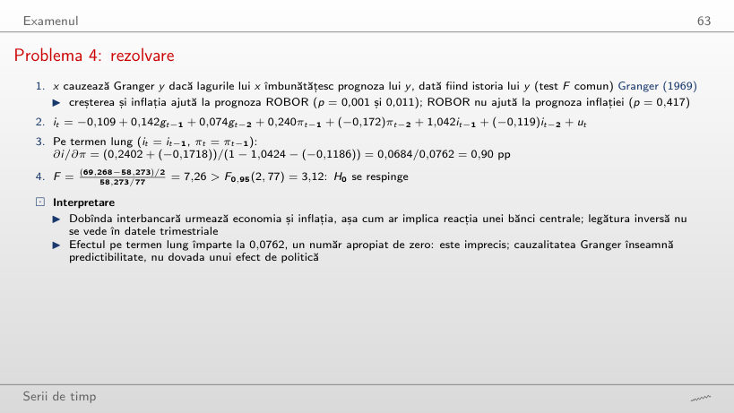
Exemplu rezolvat
Răspuns
Pînă în 2022Q4 stă între 1,06 și 1,32 (1,27 în 2019Q4), apoi coboară la 0,91 în 2023Q4 și 0,90 în 2026Q2. Numitorul 1 − bi,1 − bi,2 rămîne între 0,03 și 0,09, deci mici schimbări ale coeficienților mută mult raportul. Testul Granger pentru g → i respinge pe toate eșantioanele (p ≤ 0,008).
Problema 5: rezolvare
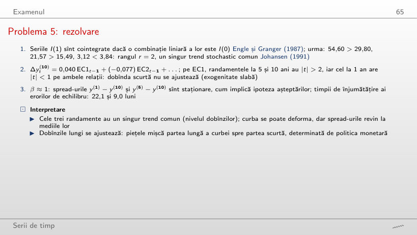
Exemplu rezolvat
Răspuns
10,9 luni, aproximativ jumătate: pentru valori proprii aproape de 1, ln λ ≈ −(1 − λ), iar 1 − λ este proporțional cu α. Componenta rapidă scade de la 9,0 la 4,3 luni. Cu α împărțit la 4 timpii devin 89,6 și 37,2 luni.
Problema 6: rezolvare
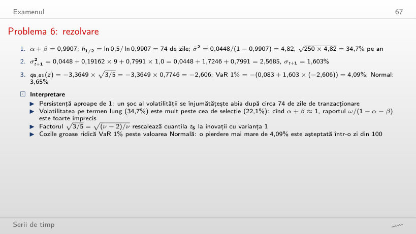
Exemplu rezolvat
Răspuns
Tot 2,5685: GARCH(1,1) depinde de εt2, deci o creștere de 3% și o scădere de 3% au același efect. Efectul de levier cere un model asimetric (GJR sau EGARCH, Capitolul 5). Cu εt = 0, σ2t+1 = 0,844, sub varianța de azi.
Problema 7: rezolvare
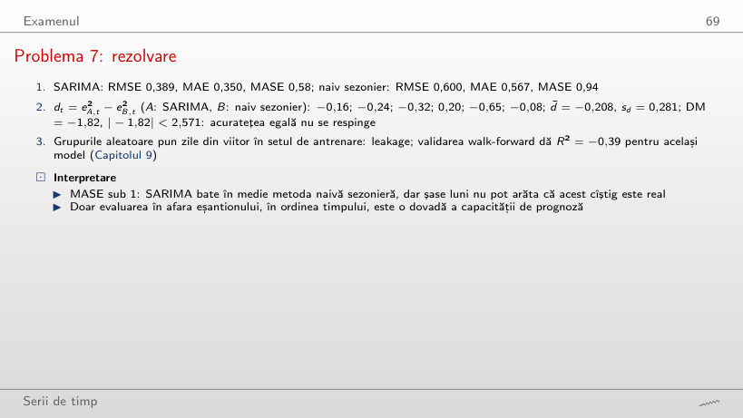
Exemplu rezolvat
Răspuns
De la aproximativ 1,35: DM = −2,33 la 1,2 și −2,63 la 1,4, față de valoarea critică 2,571 cu 5 grade de libertate. Cu șase luni chiar o metodă cu erori cu 40% mai mari abia se distinge; MASE sub 1 nu este o dovadă.
Problema 8: rezolvare
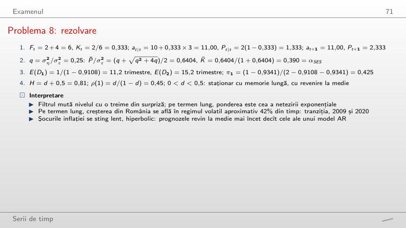
Exemplu rezolvat
Răspuns
0,618 = (1 + √5)/2 / (1 + (1 + √5)/2). Cu cît nivelul se mișcă mai mult față de zgomot, cu atît filtrul crede mai mult observația nouă. Primul pas rămîne Kt = 2/6 = 0,333, pentru că depinde doar de Pt = 2 și σε2 = 4; cîștigul converge apoi la valoarea de echilibru în cîțiva pași.
IAPC al României (Eurostat prc_hicp_minr, 2015 = 100) este citit cu funcția capitolului pe 4 noiembrie 2026 și tăiat la august 2026, ultima lună din curs; valorile din ianuarie 2005 – august 2026 nu au fost revizuite și reproduc exact cifrele din curs. Estimările celor 36 de modele SARIMA, reziduurile lor și prognozele provin din codul capitolului (statsmodels SARIMAX). Problema 2 folosește PIB-ul real al României în versiunea din curs (Capitolul 3, citit din graficul vectorial al capitolului, deoarece Eurostat a revizuit seria), Problema 4 creșterea PIB, inflația și ROBOR 3M ale VAR-ului din Capitolul 6, Problema 5 randamentele titlurilor de stat ale SUA (FRED, pînă în septembrie 2026), Problema 6 estimările GARCH(1,1)-t ale BET din Capitolul 5. Browserul calculează corelogramele, testele Ljung–Box și Jarque–Bera, măsurile de acuratețe, testul Diebold–Mariano, regresiile OLS ale Problemei 4 și calculele de mînă. Variantele care nu apar în curs (alte capete ale eșantionului, alte origini ale prognozei, alte penalizări ale criteriului, alte laguri, alți parametri ai problemelor) sînt rulări suplimentare ale codului capitolului pe aceleași date; graficele din „Interpretarea datelor”, „Pasul 2”, „Interpretarea corelogramei”, „Pasul 4”, „Interpretarea verificării reziduurilor”, „Interpretarea prognozelor” și din rezolvările problemelor sînt grafice suplimentare pentru slide-uri care dau doar cifre.